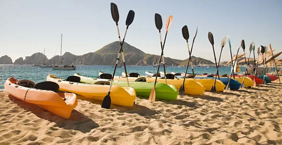

Travel Guide

Plan a Safer Day on the Water
Updated July 2026Practical coastal travel guidance
A beach day begins with the conditions you cannot see from a photograph: local surf, currents, weather, and water-quality notices. Read posted warnings, identify supervised swimming areas, and make sure everyone in your group knows where to meet. The full coastal guide explores how to adapt plans when conditions change.
Rip currents can carry swimmers away from shore even on beaches that appear inviting. Follow lifeguard instructions, avoid fighting directly against the current, and signal for help when needed. Our dedicated article explains warning signs, prevention, and how to respond without putting other people at risk.
Prepare Before You Paddle
Before setting out in a kayak, consider wind, tides, route length, equipment, and the experience of the least confident paddler. Wear appropriate flotation, share a return plan with someone ashore, and know when to turn back. The longer paddling article provides a practical framework for making those decisions.
Explore Reefs Responsibly
Reef visits are most rewarding when wildlife and habitats are left undisturbed. Secure loose equipment, avoid touching coral, respect protected areas, and choose operators who explain local rules. The responsible reef article covers both in-water behavior and the choices travelers can make before booking.
Sources: National Park Service beach and water safety guidance , National Park Service swimming safety guidance , and NOAA Florida Keys National Marine Sanctuary reef guidance .